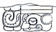
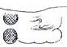
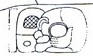
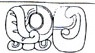
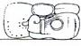

| A1 |  | Distance Number: 2 K'ins, 10 Winals (should be 11 Winals) |
| B1 | Distance Number continued: 2 Tuns | |
| A2 | u-ti-ya "it happened" | |
| B2 | TAN-na LAM Half-period ending | |
| C1 |  | Tzolk'in: 2 [Ahaw] |
| D1 | Haab:13 Pohp | |
| C2 | a-lay?-ya Dedication expression | |
| D2 | Tzolk'in: 8 Ik' | |
| E1 |  | Haab: 5 Chen (should be Keh) |
| F1 |  | SI-ya-ha "he was born" |
| E2 | Balah Chan K'awiil | |
| F2 |  | K'uhul Mutul Ahaw "Holy Lord of Mutul" |